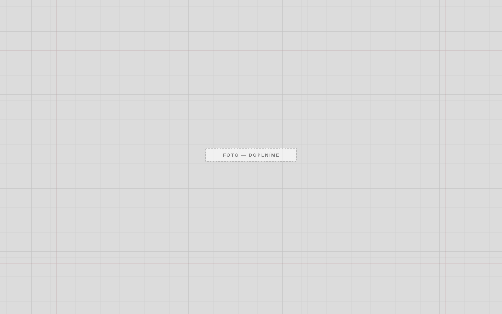

Náš přístup
Milníky, návaznosti profesí a průběžné informace pro investora.

Stavíme pro developery a investory. Zakázky od 50 mil. Kč.
Jasný plán, průběžný reporting a jedna odpovědnost za výsledek.
Milníky, návaznosti profesí a průběžné informace pro investora.
Subdodavatele vybíráme, řídíme i kontrolujeme my.
Stav prací, čerpání rozpočtu i rizika v pravidelných reportech.
Pozemní stavby pro developery a investory. Zakázky od 50 mil. Kč.
Spolupracujeme s developery, investory a provozovateli na zakázkách od 50 mil. Kč.
Rozšiřujeme tým. Napište nám.